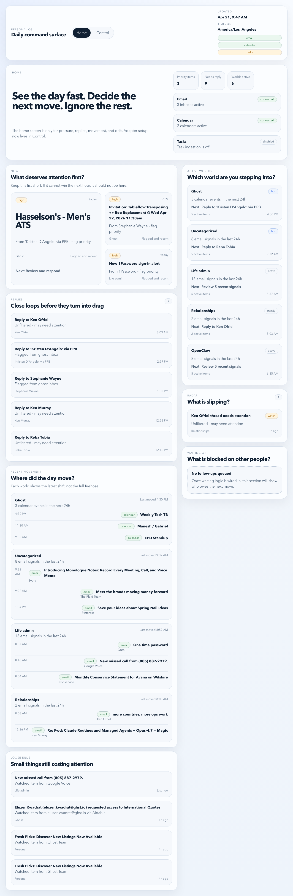

1. Current Real Deal
This is the live current dashboard capture. It is the reference point for the mockups below.

This board starts from the real current dashboard and then shows the first mockup pass for the shell, dashboard, and record detail. No product code is involved here.
Warm background, green accent, Fraunces display, soft white panels.
Green-framed shell, calmer page openings, and stronger work surfaces.
Real Deal's warmth, clarity, and utility.
The product frame, hierarchy, and page composition.
This is the live current dashboard capture. It is the reference point for the mockups below.

The shell keeps Real Deal's warmth, but gives it a stronger green-framed rail and a nested workspace stage.
One shared opening frame across screens, calmer than the current app, but still recognizably Real Deal.
The main work surface should take over faster and stop competing with the rest of the page.
One larger card anchors the area before smaller actions fill in around it.
Calendar and email activity sits lower and calmer.
Still visible, but no longer competing with the hero area.
This is the dashboard direction after the shell refresh: one opening frame, one primary work area, one quieter support rail.
The top utility strip and the hero message become one opener instead of two separate boards.
Large card holds the biggest decision and gives the page a stronger center of gravity.
The record page becomes more of a relationship workspace: stronger identity, calmer signal, and a clearer working timeline.
Investor at Ghost Capital
Top frame gives the relationship a stronger sense of identity before the widgets start.
Last reached out 42 days ago. The warning state should feel integrated, not bolted on.
Left column becomes a calmer report instead of a pile of cards.
Timeline becomes the main working surface, not just the right column content.
Filters stay available, but quieter and better integrated.
The page should feel like a relationship workspace, not a generic CRM profile.